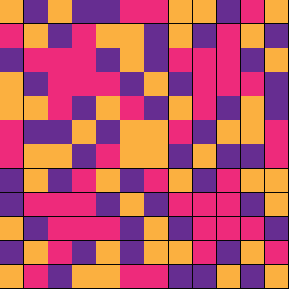
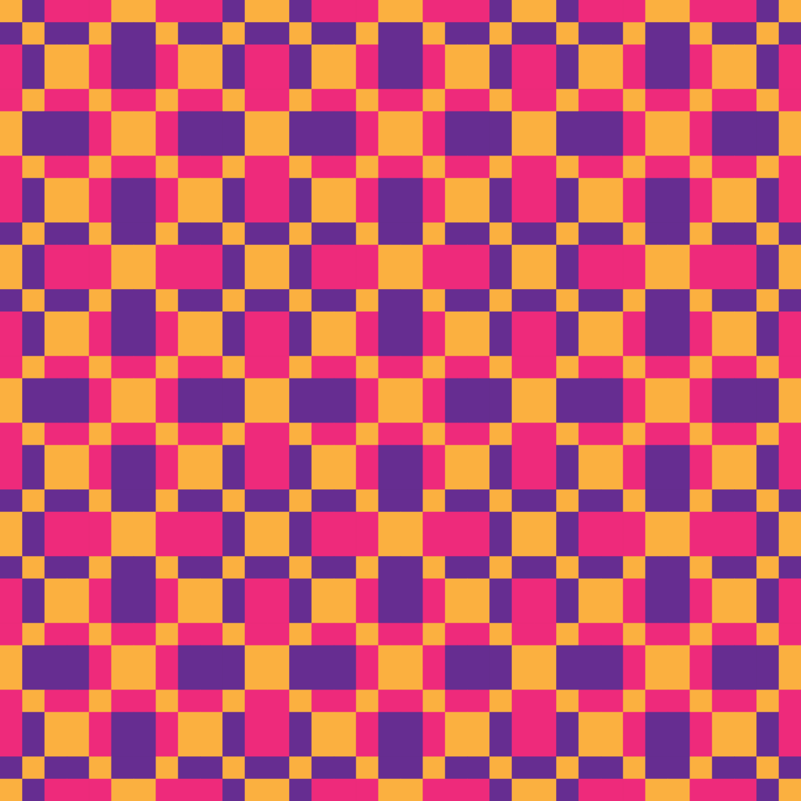
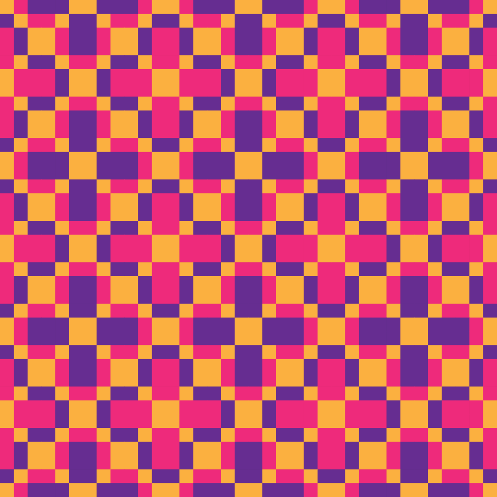
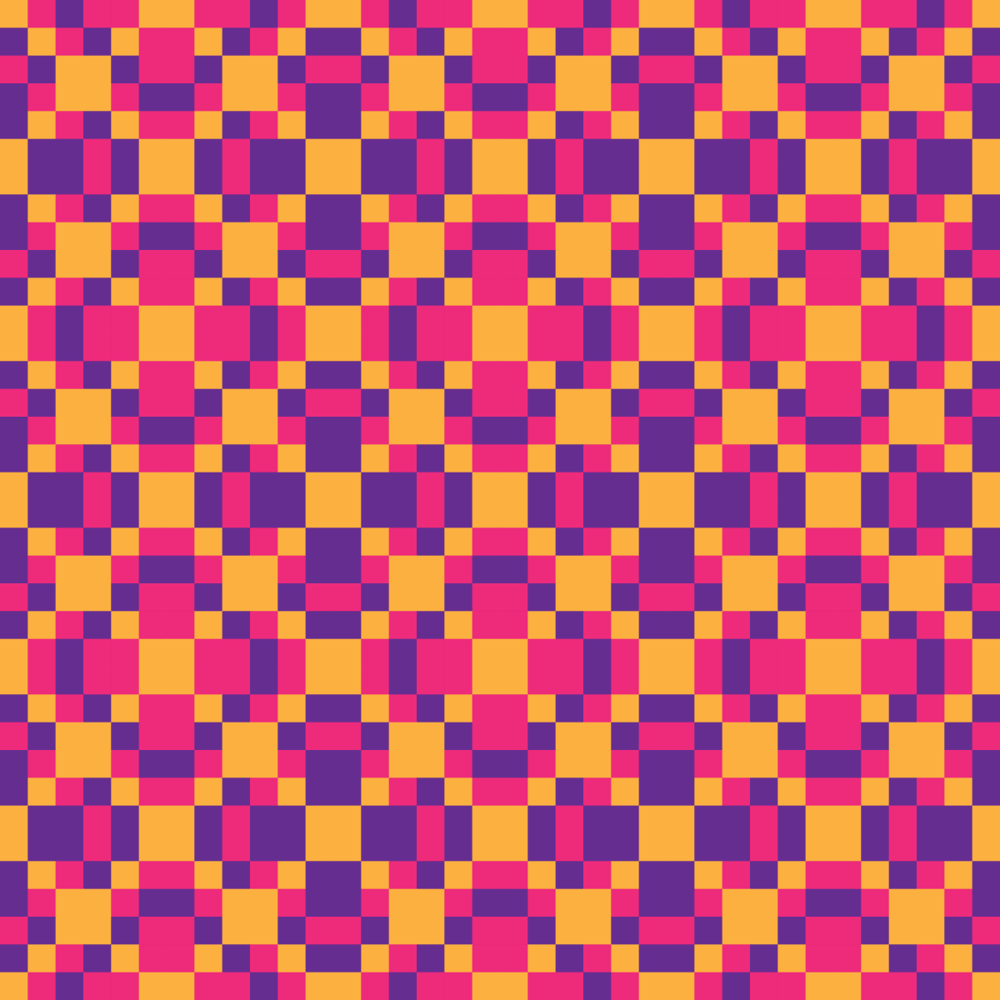
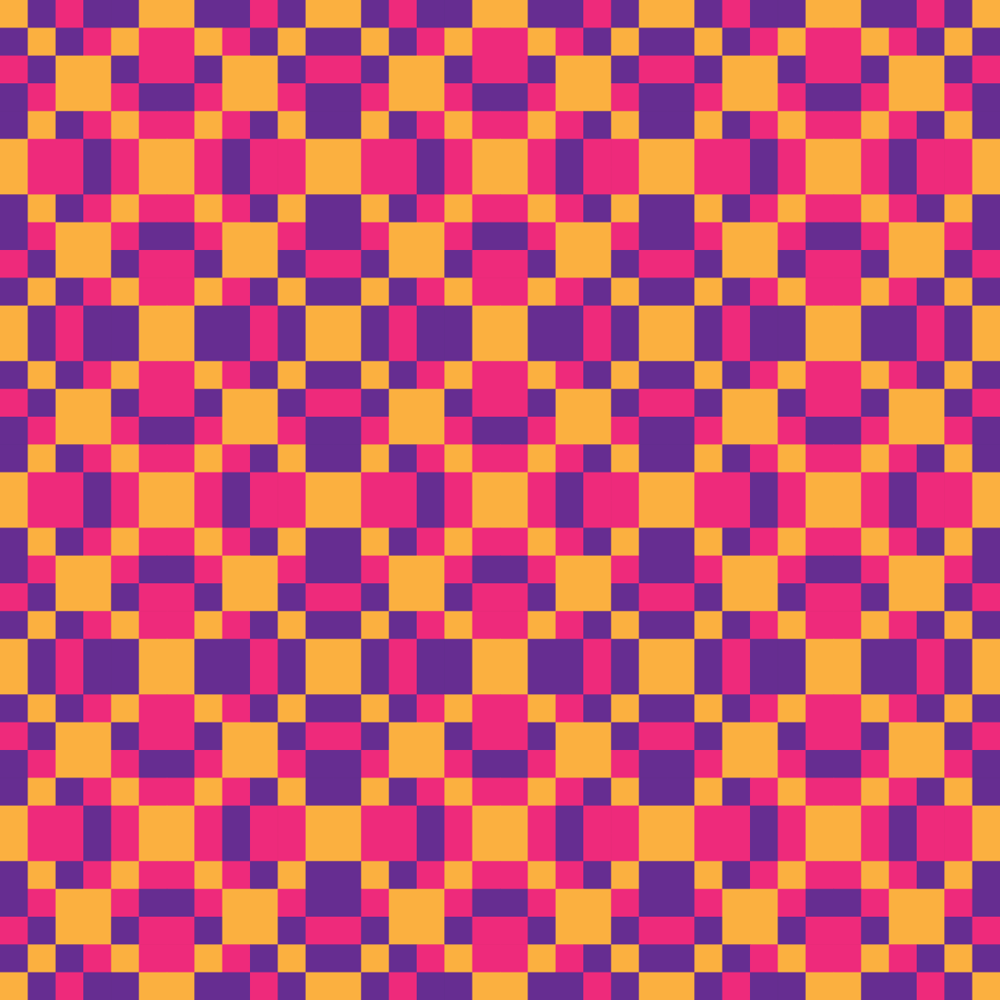
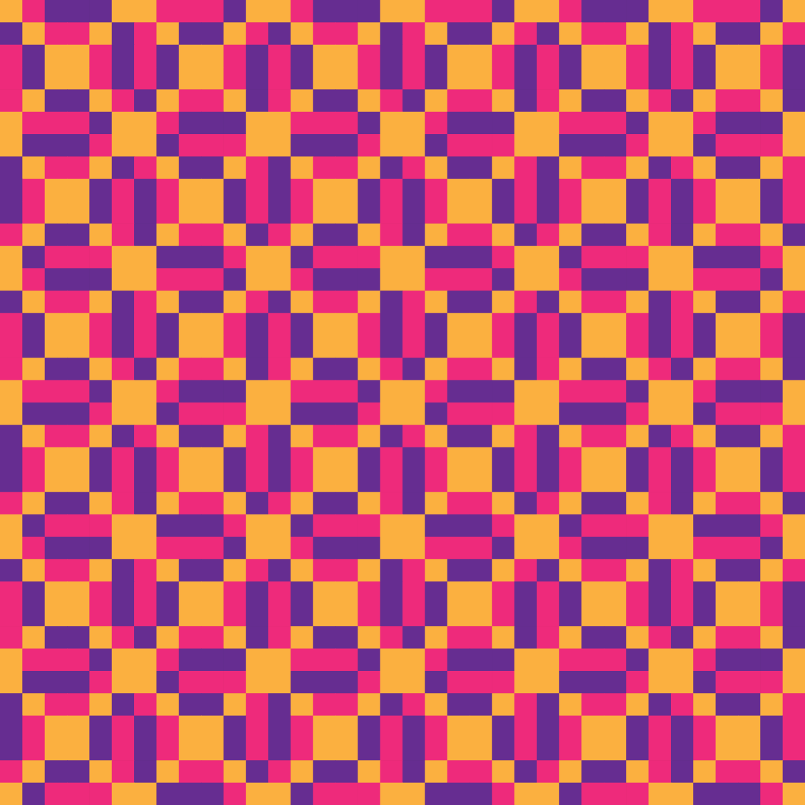
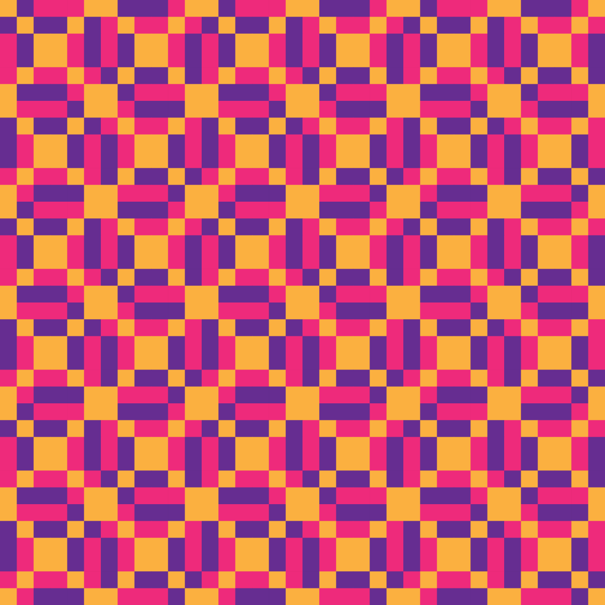
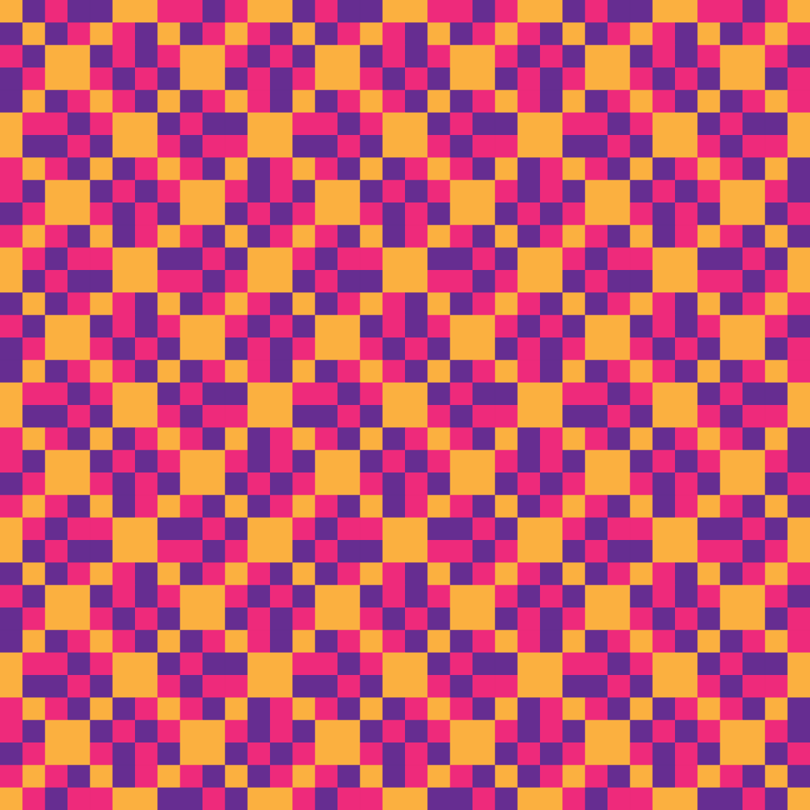
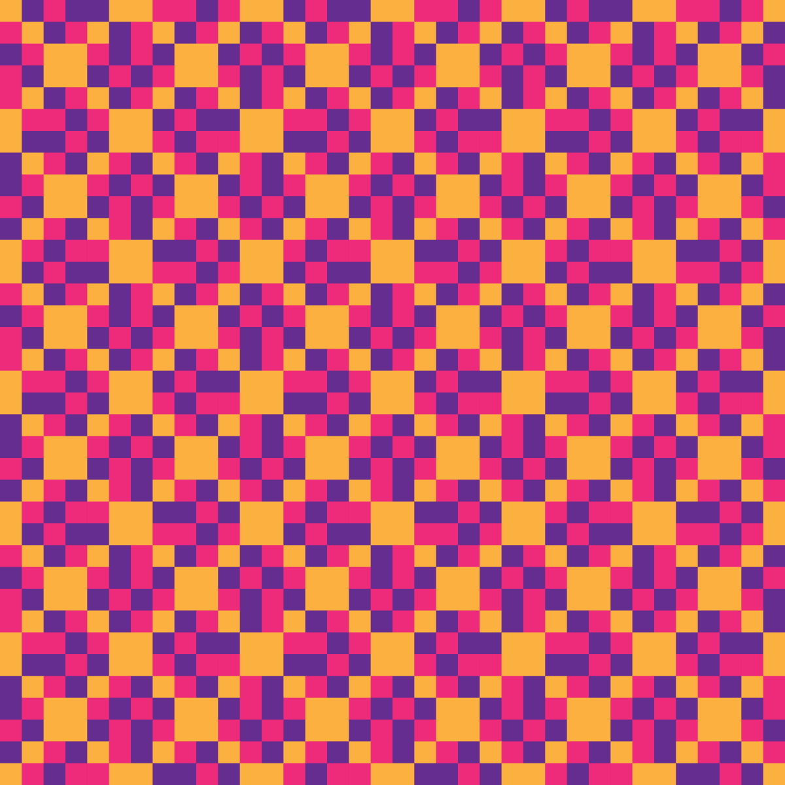

Otros idiomas: Français · English · ไทย
Hexagrama 19 — Jie, La Limitación
N.º cronológico 19 (orden por pesos binarios) · n.º King Wen (tradicional) 60 · 節
Por Anibal Edelberto Amiot — Actualizado el 1 de octubre de 2026
Traducción en revisión — si detectas un error, indícalo.

el hijo mediano
la hija menor
Sobre el Lago, el Agua: la imagen de la limitación. El agua del lago permanece contenida por sus orillas, y es ese límite mismo lo que le permite existir como lago en lugar de perderse en ciénaga informe. Es la figura de la restricción que estructura en lugar de asfixiar. Así el hombre noble establece el número y la medida, y reflexiona sobre la virtud y la conducta: la limitación elegida con acierto es lo que da forma a todas las cosas, incluido uno mismo.
El bambú forma sus nudos para que la savia no se disperse. Sin los límites que la jalonan, el crecimiento mismo perdería su fuerza dispersándose sin dirección. Este rasgo dice que la limitación bien establecida no es un freno a la vida, sino la condición de su vigor.
Los seis rasgos
En la base de la tierra, lo lleno se estremece: el impulso yang que sostenía la figura entera consiente en ceder su lugar.
La tierra afianzada toca su límite: la solidez que sostenía el edificio se dispone a cambiar de naturaleza.
En el umbral entre la tierra y el hombre, la flexibilidad se carga: lo que por naturaleza cedía se dispone a endurecerse.
En la escucha del hombre, el hueco se colma: la disponibilidad que recibía pronto va a afirmarse.
En el lugar del sabio, lo lleno se ahueca: la fuerza que gobernaba la figura desde el centro se dispone a invertirse.
En la cima, el vacío alcanza su colmo y se cierra: la abertura más extrema se vuelca hacia su contrario.
Fuente: La Livrée d'Hermès, Anibal Amiot — capítulo 7.1 (pp. 63–68). Versión francesa de esta página.
Para las nociones empleadas aquí — cuadrado mágico, capa y tirada, el Yi King — consulte el léxico del proyecto.
Los motivos de este hexagrama
De este hexagrama se generan ocho motivos Jacquard de 12×12, uno por cada familia admisible del sistema. Cada uno tiene su página (en inglés): celda, teselado, recoloreados y datos.

Bases — YANG mutant
Bases — YANG
Pair of two — YANG + YIN mutant
Pair of two — YIN mutant + YANG mutant
Pair of two — YIN + YANG
Pair of two — YIN + YANG mutant
Triple — without YANG
Triple — without YANG mutantHexagramas vecinos
18 — Kan, Lo Insondable · 20 — Jian, El Obstáculo
Hexagramas que comparten un trigrama
Mismo trigrama superior (☵ Kan): 16 — Bi, La Solidaridad · 17 — Zhun, La Dificultad Inicial · 18 — Kan, Lo Insondable · 20 — Jian, El Obstáculo · 21 — Ji Ji, Después de la Consumación · 22 — Jing, El Pozo · 23 — Xu, La Espera
Mismo trigrama inferior (☱ Dui): 3 — Lin, El Acercamiento · 11 — Gui Mei, La Desposada · 27 — Dui, Lo Alegre · 35 — Sun, La Merma · 43 — Kui, La Oposición · 51 — Zhong Fu, La Verdad Interior · 59 — Lu, El Porte